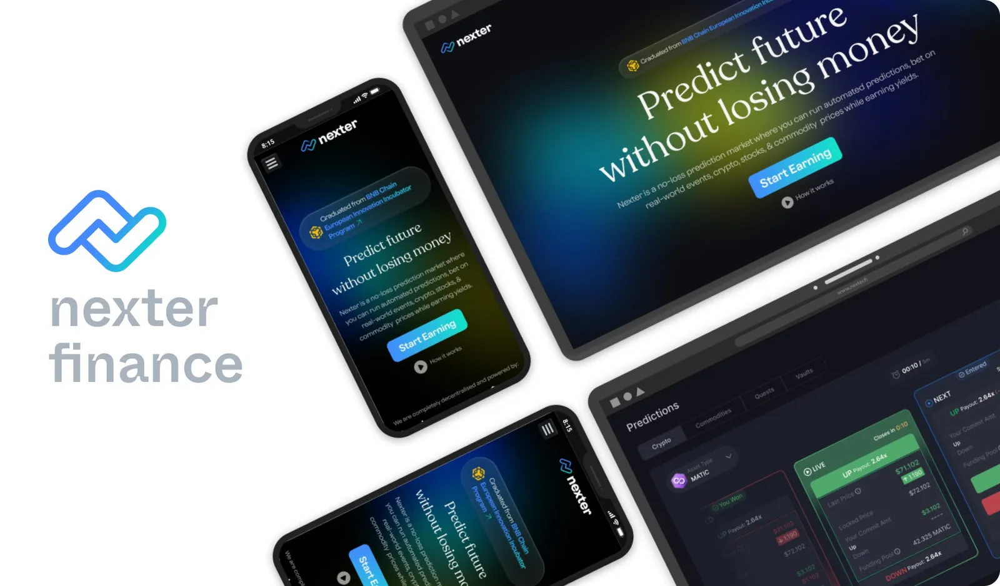
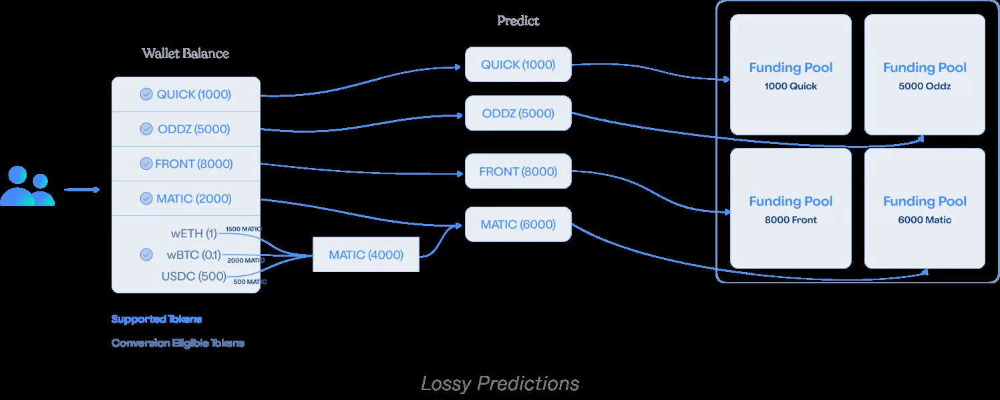
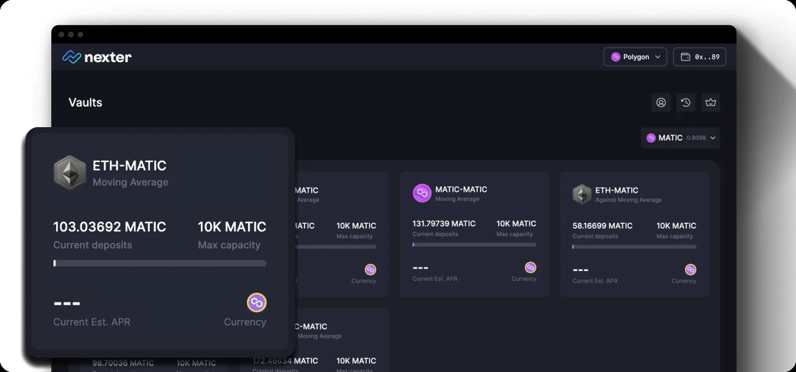
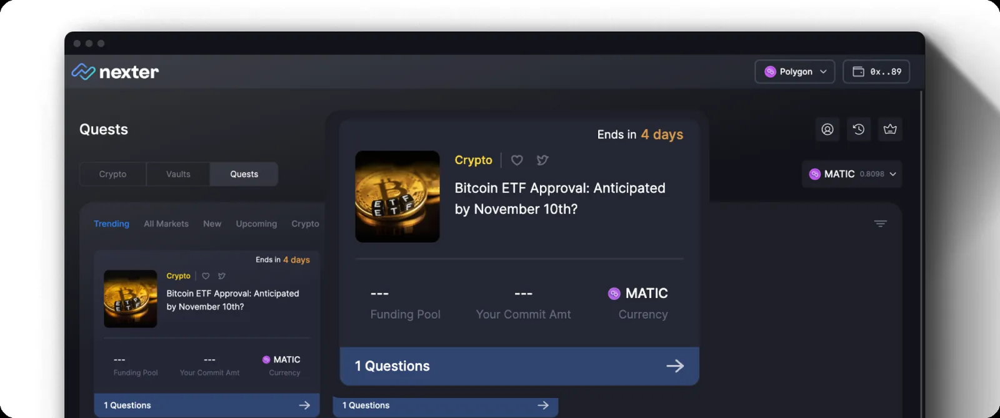
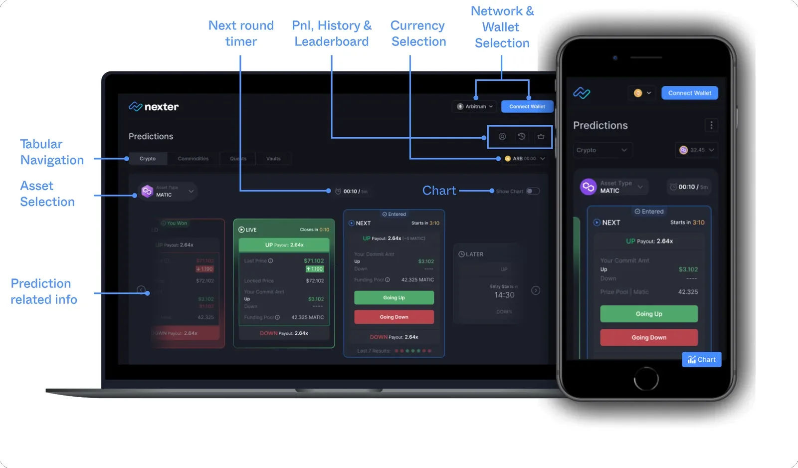
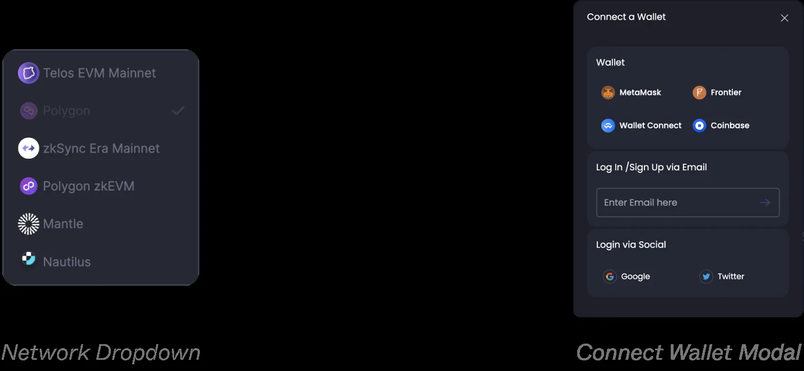
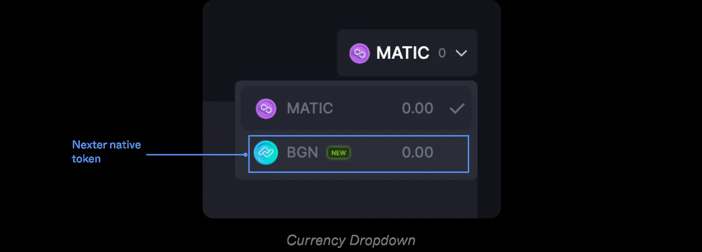
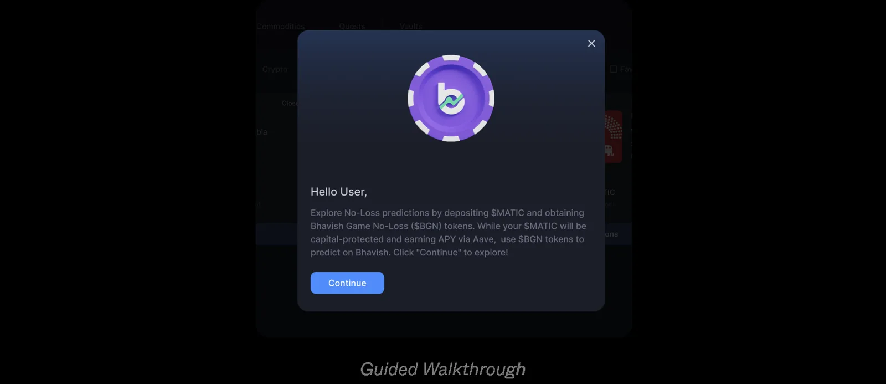

Nexter Finance · DeFi · 2022–240 → 1Hands-on
Nexter Finance: from zero to 1.7 million predictions
A decentralised prediction market for crypto, stocks, commodities and real-world events. I led its design from the ground up on desktop and mobile web, and proposed the phased launch that let the team ship while the scope was still moving.
- RoleDesign Lead, managing a team of three
- PlatformsDesktop and mobile web, on six networks
- Users (Jan 2024)10K+ in total, 1K+ weekly active
- Volume (Jan 2024)$19M+ across 1.7M+ predictions

The challenge
Nexter, formerly Bhavish Finance, set out to launch a decentralised prediction market in two forms. In Lossy predictions, people commit crypto on whether an asset will go up or down within a round, and the winners are paid from the pool. In No-loss predictions, they deposit stablecoins and predict with game tokens that earn yield, so the deposit itself is not at stake.
The first launch covered crypto, stocks, commodities, automated prediction vaults and real-world event quests, across six blockchain networks. The brief was incomplete, the scope kept moving, and the time for design was short.
Research showed real demand, and the category’s weak spots: prediction markets are zero-sum for participants, liquidity is thin, and most products gave people little reason to stay. A poll of close to 50 people on Twitter and Telegram put the strongest interest in crypto predictions, from people who already knew how prediction markets work.
My role
I led design from the ground up across desktop and mobile web, and designed the product myself. I managed a team of three, a visual designer, a motion designer and an intern I trained, inside a fully remote, cross-functional team.
The remit went beyond the app: motion, marketing campaigns and the landing page sat with design too. As engineering built each release, I reviewed every screen against the design and logged the gaps for the developers.
Shipping while the scope moved
No-loss was blocked: its requirements weren’t ready. Rather than wait, I proposed launching Lossy predictions first, and leadership agreed. It put a real product in front of users, tested whether Lossy had a market, and gave leadership time to get No-loss right.
I then argued against launching everything in Lossy at once. A phased release let me finish every use case for one market before starting the next, and the development team backed it. Crypto, stocks and commodities shipped first, then vaults, then quests, with No-loss in the final phase.



Waiting for a settled scope would have meant not shipping.
Designing for two kinds of user
The people most likely to use Nexter already knew web3, so the design stays out of their way: the round, the asset and the time left are visible at a glance, and a prediction is a choice of up or down and an amount.
But a wallet is the first wall a newcomer hits. Alongside the usual wallet connection, people without a web3 wallet can sign in with email or a social account, through MagicLink. First-time visitors get coach marks that point out the key actions.


Adding No-loss without breaking what worked
By the time No-loss was ready, Nexter was integrated with Quickswap, and a lot of people were using it through both Quickswap and the Nexter app. I was asked not to change the interface they had learned.
So No-loss arrived without disturbing Lossy. It sits behind the currency selector as Nexter’s own token, a guided walkthrough explains it the first time, and deposits, withdrawals, reinvesting and claiming rewards all live in the portfolio.


Testing with six people
With Lossy and No-loss designed, I ran in-house usability testing with six people: three who knew prediction platforms and three who had never used one.
- People who knew the category finished tasks much faster. Newcomers couldn’t finish unaided, but could with guidance.
- Both groups struggled to understand how No-loss worked.
- Both wanted the key facts on every market card, so they could compare options and decide.
The limits are worth stating: the timeline meant testing happened after design, and not with Nexter’s own users before development began. I moved on from Nexter soon after this round, so acting on the findings was left to the team.
Outcome
After launch I tracked behaviour in Google Analytics and Hotjar to see how people were really using the app. Partnerships with decentralised exchanges such as Quickswap, Zeroswap, Nautilus Chain and Heliswap, leaderboard campaigns and community building brought people in.
- 10K+Total users
- 1K+Weekly active users
- 1.7M+Predictions made
- $19M+Total volume (USD)
- $242KFees collected
Nexter’s figures, as published in my case study in January 2024.